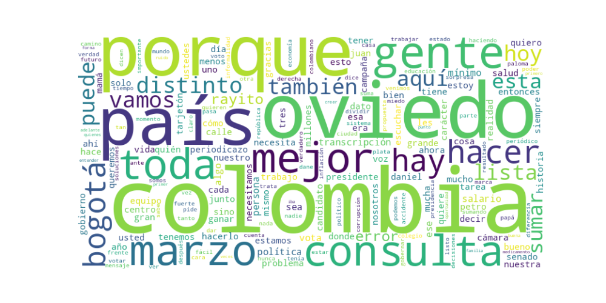

Seguidores: 680,974
1. Perfil de Comunicación El candidato emplea un estilo de comunicación intimista y cercano, que combina un lenguaje técnico derivado de su formación económica con un tono popular y coloquial, dirigido directamente al ciudadano común. Su discurso es auténtico y personal, recurriendo constantemente a narrativas autobiográficas (su accidente, su voz, su familia) para humanizar su figura y generar empatía. Utiliza un formato conversacional, invitando al diálogo ("escríbeme", "hagamos equipo") y desdibuja las fronteras entre el espacio público y privado, compartiendo detalles de su vida con una transparencia estratégica. Es un estilo que busca desmontar la imagen del político tradicional ("gomelo", "personaje"), presentándose como alguien real, con cicatrices y una historia de esfuerzo.
2. Temas Principales 1. Salud: Aborda el tema como una crisis de gestión y corrupción, no ideológica. Ejemplo: "La salud no puede ser botín político... los medicamentos dejan de llegar y las personas empiezan a pagar con su vida". Propone soluciones técnicas como reasignación de pacientes y transparencia financiera. 2. Economía y Empleo Formal: Centrado en la informalidad como problema estructural. Critica medidas populistas (como subir el salario mínimo) que no abordan el núcleo del problema: "solo 1 de cada 10 trabajadores se gana el salario mínimo". Su enfoque es la creación de empleo formal y oportunidades reales mediante articulación educación-empleo. 3. Educación: Vincula educación directamente con empleo y productividad. Critica un sistema que "multiplica frustraciones" porque no conecta con el mercado laboral. Propone un sistema mixto, público-privado, y alfabetización digital, usando ejemplos como Radio Sutatenza. 4. Unidad y "Sumar entre Distintos": Este es el tema central y transversal de su discurso. Rechaza la polarización ("anti-Petro, anti-Uribe") y propone el "centro que sí se moja" como destino político. Ejemplo: "Colombia no necesita más gritos. Necesita evidencia, trabajo en equipo y resultados". 5. Seguridad: Aborda el tema con un tono técnico y sereno, rechazando soluciones simplistas ("plomo", "megacárceles"). Propone seguridad basada en "prioridades, inteligencia y estrategia" y la presencia real del Estado.
3. Tono y Sentimiento Dominante El tono general es propositivo, conciliador y esperanzador, pero con una base de crítica técnica y seriedad. Evita la confrontación agresiva ("respondemos con amor y argumentos") y el pesimismo catastrófico. Maneja un optimismo pragmático: no ignora los problemas ("asumir la realidad"), pero insiste en que se pueden resolver "haciendo equipo" y "haciéndolo mejor". Es un tono que busca calmar ("menos ruido, más país") y generar confianza mediante la competencia técnica y la autenticidad personal.
4. Palabras Clave de Poder * "Hacerlo mejor" / "No perfecto. Mejor": Su mantra central, que rechaza promesas maximalistas y promete mejora continua y pragmática. * "Sumar entre distintos": Frase que encapsula toda su propuesta política de unidad y colaboración transversal. * "El centro que sí se moja": Define su posición política como activa, comprometida y no "tibia". * "Con toda por Colombia": Slogan de campaña que evoca energía, compromiso total y patriotismo. * "Periodicazo": Metáfora recurrente para sus intervenciones críticas, denuncias o llamados a acción. Simboliza fuerza comunicativa directa. * "Rayito" (⚡): Símbolo visual y verbal de su campaña, asociado a energía positiva, disciplina y su marca personal. * "Cicatrices": Palabra clave de su narrativa personal, usada para simbolizar vulnerabilidad, resiliencia y la necesidad de unir las heridas del país.
5. Conclusión Estratégica La estrategia de comunicación de Oviedo es dual y sofisticada. Por un lado, construye una identidad de "tecnócrata humano": un experto en datos (exdirector del DANE) que baja ese conocimiento a la calle con un lenguaje accesible y una historia personal de superación. Por otro, se posiciona como el "antídoto a la polarización", el candidato que puede hablar a ambos espectros sin alienarlos, apelando al cansancio del país con el "grito" y el "anti". Su audiencia target es amplia: ciudadanos de "centro", jóvenes profesionales, informales que buscan oportunidades, y aquellos desencantados con la política tradicional de enemistad. Busca evocar confianza por competencia y esperanza por unidad. El objetivo final es presentarse no como un mesías, sino como un facilitador sereno y capaz que puede "estabilizar" el país y hacer que las cosas funcionen mejor mediante el trabajo en equipo.
1. Resumen del Patrón de Éxito: Los videos más exitosos del candidato se estructuran sobre una fórmula dual poderosa: la combinación de una narrativa personal auténtica y vulnerable, con un llamado alto y claro a la unidad nacional. Oviedo no se presenta como un político tradicional, sino como un ciudadano ejemplar cuya historia de superación personal (cicatrices, burlas, esfuerzo académico) se convierte en una metáfora de lo que Colombia necesita: sanar heridas y unirse para "hacerlo mejor". El éxito se basa en la autenticidad emocional y en posicionarse como un puente ante la polarización.
2. Tácticas de Comunicación Clave: * Narrativa de Vulnerabilidad y Superación: Utiliza anécdotas personales dramáticas (accidente facial, burlas por su voz, origen humilde) no para buscar lástima, sino para demostrar resiliencia y forjar un carácter. Esto humaniza al candidato de manera extrema y lo hace relatable. * Contraste Frente a la Polarización: Define claramente un "enemigo": la división política tradicional ("no es con toda por la izquierda o la derecha"), el ruido y la incapacidad para "hacer equipo". Se posiciona como la antítesis del "politiquero" de palanca, oponiendo "sensatez" frente a "dividir para dar likes". * Apelación a la Esperanza y el Esfuerzo Colectivo: La emoción central es una esperanza trabajadora y disciplinada. Evoca un orgullo por el esfuerzo ("hicimos mucho con poco") y convoca a una energía positiva ("el rayito") para construir juntos. El miedo está implícito en la continuidad de la división, pero se enfatiza la solución. * Llamados a la Acción Comunitarios y Concretos: Pide explícitamente que la audiencia se convierta en una "comunidad" que replique, comparta y comente. Transforma el apoyo electoral en un movimiento digital participativo ("sumando, lo hacemos mejor").
3. Temas de Mayor Resonancia: 1. Unidad Nacional Superadora de la Polarización: El mensaje "Con Toda por Colombia" es su tema bandera y de mayor resonancia. 2. Meritocracia y Esfuerzo Personal: Su historia de becas, trabajo duro y logros sin "palanca" resuena profundamente. 3. Vulnerabilidad y Liderazgo Empático: Las "cicatrices" como elemento unificador y la historia de su madre como figura central. 4. Preparación Técnica para Gobernar: Vincula su formación académica específica (doctorado en regulación energética) directamente con la solución de problemas concretos del país ("una bomba de tiempo").
4. Perfil de la Audiencia Implícita: El lenguaje (directo, coloquial pero con pinceladas técnicas) y los temas apuntan a un espectro amplio pero con núcleos específicos: jóvenes y adultos jóvenes valoran la meritocracia y rechazan el establishment; ciudadanos indecisos o cansados de la polarización tradicional encuentran en él una tercera vía creíble; y profesionales o técnicos que aprecian un discurso basado en preparación y datos. Se dirige a quienes se sienten subrepresentados por la dicotomía clásica.
5. Conclusión Estratégica: La clave fundamental del poder de su discurso es la transacción de credibilidad. Oviedo intercambia su historia personal (vulnerabilidad, esfuerzo, cicatrices) por credibilidad política. No pide un voto de fe, sino un voto basado en la evidencia de su carácter y su trayectoria. Lo que lo hace potente y diferente es que desplaza el eje del debate político de la ideología (izquierda/derecha) hacia la competencia y la ética del carácter (unidad/esfuerzo vs. división/palanca). Su mensaje es: "Yo, como colombiano que ha superado adversidades, puedo guiar a Colombia a hacer lo mismo". Es un relato épico personal proyectado como destino nacional.

Caption: Estamos haciendo mucho… con poco. En un país que no sabe hacer equipo, estamos sumando. En un país donde dividir da likes, estamos haciendo atractiva la sensatez. Eso implica riesgos. Implica prejuicios. Pero avanzar como lo estamos haciendo, con humildad y escuchando, me confirma algo: Sí se puede hacerlo distinto. Y sí se puede hacerlo mejor. ⚡ #VotaPorOviedo
Likes: 20,373 | Comentarios: 570 | Reproducciones: 186,386
Ver en InstagramCaption: Hay algo que nos une a todos… Antes que de un político, antes que de un partido, todos venimos de una mujer. De una mujer que, en medio de su propia historia, apostó por la vida. Las que emprenden, cuidan, lideran, estudian y sostienen este país todos los días. Colombia no avanza sin las mujeres. Feliz #DíaInternacionalDeLaMujer a todas. ¡Y gracias mamá!
Likes: 41,585 | Comentarios: 821 | Reproducciones: 445,571
Ver en InstagramCaption: ¿Usted no sabe quién soy yo? Venga, le cuento. Crecí en Normandía, Engativá, cerca del aeropuerto. Mi papá era piloto y viajaba mucho. Mi abuelo Plutarco, carpintero, fue mi figura paterna. En 1982 tuve un accidente: me caí sobre una lata y me cosieron 72 puntos en la cara. Ese accidente cambió mi voz y afectó mi audición. Crecí escuchando burlas. Años después fui director del DANE y se volvieron a burlar… otra vez por mi voz. Y entendí algo: todos cargamos cicatrices. Hoy quiero unir muchas cicatrices para sanar muchas heridas en Colombia. Soy Juan Daniel Oviedo. ⚡#VotaPorOviedo
Likes: 22,679 | Comentarios: 969 | Reproducciones: 252,380
Ver en Instagram